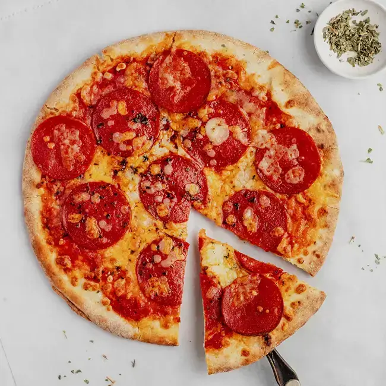

Home
Pizza Margherita

Description
Pizza Margherita is the ultimate classic Italian pizza, topped with tangy tomato sauce, fresh mozzarella and
fragrant basil leaves. Simple ingredients come together to create something truly irresistible.
Ingredients
- 300g pizza dough
- 150g tomato sauce
- 200g fresh mozzarella, sliced
- Fresh basil leaves
- 2 tbsp olive oil
- Salt to taste
Steps
- Preheat oven to 250°C
- Roll out the pizza dough on a floured surface
- Spread tomato sauce evenly over the dough
- Arrange mozzarella slices on top
- Drizzle with olive oil and season with salt
- Bake for 10-12 minutes until crust is golden
- Remove from oven and top with fresh basil leaves
- Slice and serve immediately